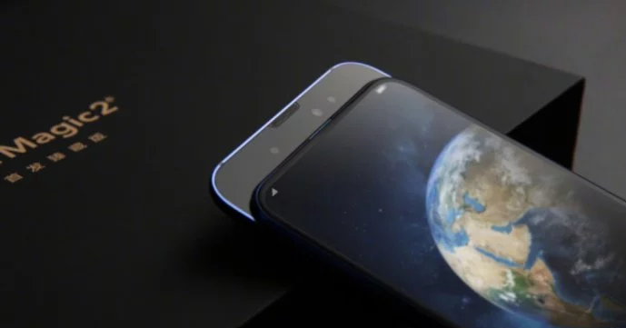

George Zhao, prezes należącej do Huawei marki Honor, już w sierpniu podczas targów IFA zapowiadał model Magic 2. Specyfikacja telefonu pozostawała w tajemnicy, ale podobnie jak w wielu innych przypadkach wyciekła z chińskiej organizacji certyfikacyjnej TENAA. Telefon będzie miał SoC HiSilicon Kirin 980 z zegarem do 2,6 GHz i 8 GB RAM-u. Smartfon wyposażono w 128 GB pamięci na dane. Ekran urządzenia mierzy 6,4″, to panel AMOLED o rozdzielczości FullHD+. Cechą charakterystyczną modelu Honor Magic 2 jest niemal 100% pokrycie przodu urządzenia powierzchnią wyświetlacza. Gdzie więc podział się przedni aparat oraz głośnik do rozmów? Wystarczy telefon rozsunąć.
Honor Magic 2 dostanie przedni aparat o rozdzielczości 16 megapikseli i dwa obiektywy ToF (time-of-flight) służące do funkcji 3D Face Unlock. W dostępnej specyfikacji nie ma natomiast informacji o czytniku linii papilarnych. Nie widać go na zdjęciach, ale mało prawdopodobne jest, że Honor zrezygnował z tego rozwiązania w nowym modelu. Czytnika powinniśmy zatem szukać raczej pod ekranem urządzenia. Interesująco prezentuje się główny, potrójny aparat – ma 16 + 24 + 16 MP. Prawdopodobnie Honor Magic 2 powieli przeznaczenie aparatów z modelu Huawei P20 Pro – zwykłego czujnika, czarno-białego i teleobiektywu.
Obrazy (gdzie obok obiektywów widnieje napis „AI Vision”) i wypowiedzi Zanilii Zhao wskazują, że Honor wprowadzi do modelu Magic 2 własnego asystenta SI o nazwie Yoyo. Według aktorki, sztuczna inteligencja będzie również dowcipnie odpowiadać na trywialne pytania, takie jak: „kto jest ładniejszy, ja czy ty?” Telefon działa na systemie EMUI 9.0, (przygotowanej przez Huawei wersji Android Pie). Będzie miał baterię o pojemności 3400 mAh, a w zestawie znajdziemy silną ładowarkę 40 W. Ostatnie niewiadome zostaną ujawnione podczas premiery zaplanowanej na 31 października.
This quirk of tumors has led to a bewildering number of nanotech-related schemes to kill cancer. Zanilia Zhao (właśc. Zhao Liying) jest 31-letnią odtwórczynią ról w telewizyjnych serialach i filmach, m.in. „Legend of Lu Zhen”, Princess Agents” czy „Duckweed”. W ubiegłym roku zajęła 4 miejsce na liście Forbesa klasyfikującej 100 najważniejszych chińskich celebrytów. Studiowała w swoim kraju na Langfang School of Electronic Information Engineering w prowincji Hebei.